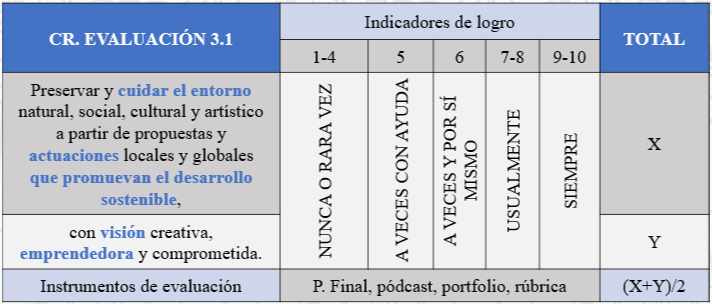
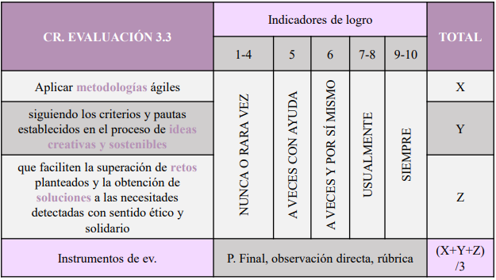

En esta situación de aprendizaje vamos a analizar los problemas sociales y ambientales que atraviesa la economía tradicional y cómo el compromiso de las empresas y la responsabilidad ciudadana están combatiendo esos grandes retos a los que nos enfrentamos en el siglo XXI. Es necesario dar paso a una nueva economía, que se centre en las personas y en el mundo en el que vivimos, donde el valor que crean las empresas va mucho más allá del dinero.
Emprendedores del cambio
SDA 10. Emprendedores del cambio
Rúbricas
Primero, os mostraré que es lo que se espera que consigáis y cómo se evalúa esta SDA. Como habitualmente os digo, las rúbricas os tienen que servir como un mapa que os muestra el camino a seguir, para autoevaluaros antes siquiera de que yo lo haga. Podéis estar seguros que la evaluación será justa, pues con ella, todos sois evaluados bajo los mismos criterios. Al igual que siempre, añadiré comentarios sobre lo que habéis hecho bien y aquello en lo que podéis mejorar (recordad que nuestro principal objetivo es la mejora continua).


Reconocimientos:
Citar a otros autores es reconocer y agradecer el trabajo que han hecho. Como nosotros somos personas éticas, aquí os dejo los créditos:
A lo largo de la situación de aprendizaje, además de los materiales propios, utilizaremos otros del libro "Economía y emprendimiento 4º. ESO" de la editorial McGraw Hill, la "Unidad 4: Valoramos la nueva economía" de Iris Martín Arconada y el libro "Economía y Emprendimiento 4º ESO" de Javier Martínez Argudo.
Obra publicada con Licencia Creative Commons Reconocimiento Compartir igual 4.0